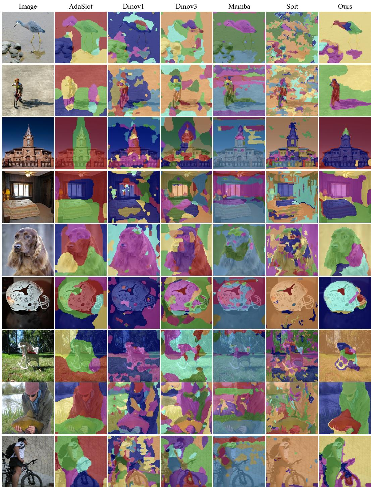

arXiv 新增 + register/part representation · P1 · 2026-06-16
RATS! Patches Talk Through Registers：register token 已经是现代 ViT/VFM 的关键设计，这篇提供了可解释视觉表征的结构先验
不加 part annotation 或 auxiliary loss，就让不同 register/head 自发专门化到类似物体部件的区域。
编号2606.14701
优先级P1
类别arXiv 新增 + register/part representation
会议arXiv 新增 + register/part representation
方法将 classification token 分解为 N 个 learnable register tokens，通过 L->N->N->L 的 compress-communicate-broadcast attention bottleneck 路由 patch 信息。
来源arXiv / OpenReview
先说结论。register token 已经是现代 ViT/VFM 的关键设计，这篇提供了可解释视觉表征的结构先验。 不加 part annotation 或 auxiliary loss，就让不同 register/head 自发专门化到类似物体部件的区域。


核心问题
register token 已经是现代 ViT/VFM 的关键设计，这篇提供了可解释视觉表征的结构先验。
方法拆解
将 classification token 分解为 N 个 learnable register tokens，通过 L->N->N->L 的 compress-communicate-broadcast attention bottleneck 路由 patch 信息。
主要贡献
不加 part annotation 或 auxiliary loss，就让不同 register/head 自发专门化到类似物体部件的区域。
实验看点
摘要报告五个 segmentation benchmark 平均 +12 mIoU，并在 ADE20K、COCO 上有一致增益；register dictionary 呈现跨类别 part-level consistency。
局限与读法
需要确认 baseline、训练目标和“自监督”设置；parts 的稳定性是否依赖类别/数据分布也要看附录。